Data Validation: membatasi isian
Validation mencegah salah ketik dengan membatasi isi sel pada angka tertentu, tanggal, atau daftar pilihan.
Langkah praktik
- Blok sel yang akan dibatasi.
- Data > Data Validation.
- Di Allow pilih Whole number, Decimal, List, Date, dan seterusnya.
- Isi batas atau sumber daftar (misalnya A1:A5).
- Tab Input Message dan Error Alert dipakai untuk pesan petunjuk dan peringatan.
Tips
Pilihan List menampilkan panah drop-down di sel.
Tangkapan layar praktik
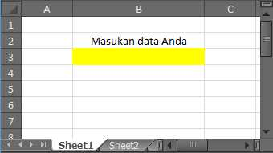
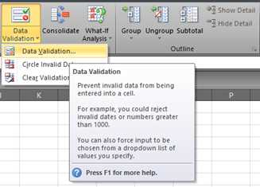
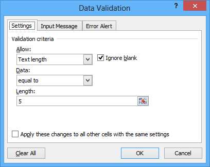
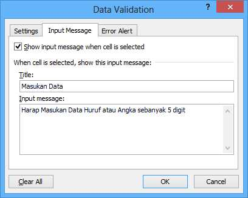
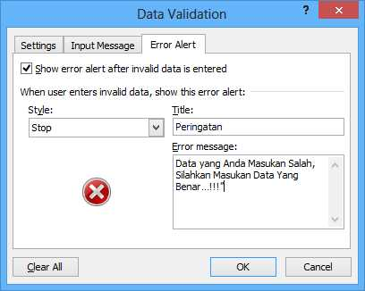
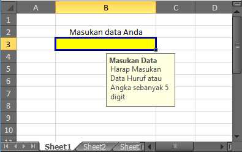
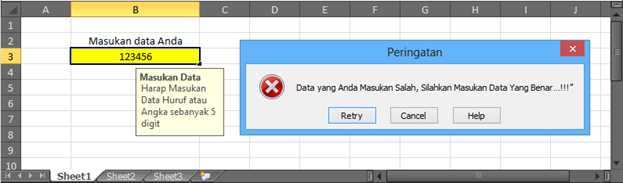
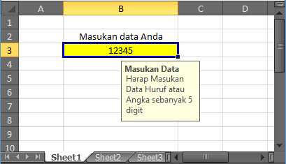
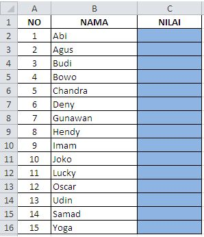
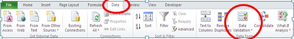
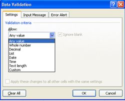
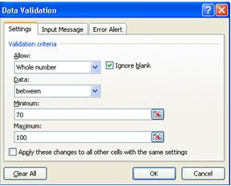
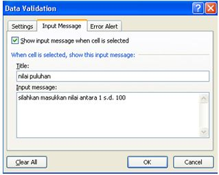
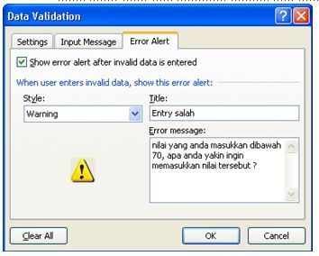
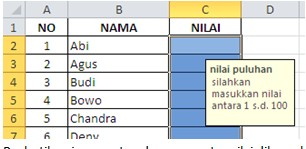
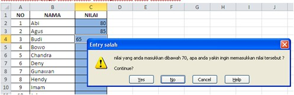
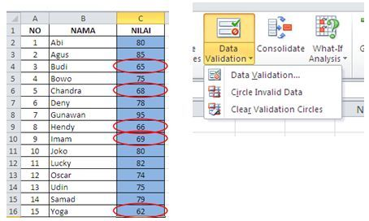